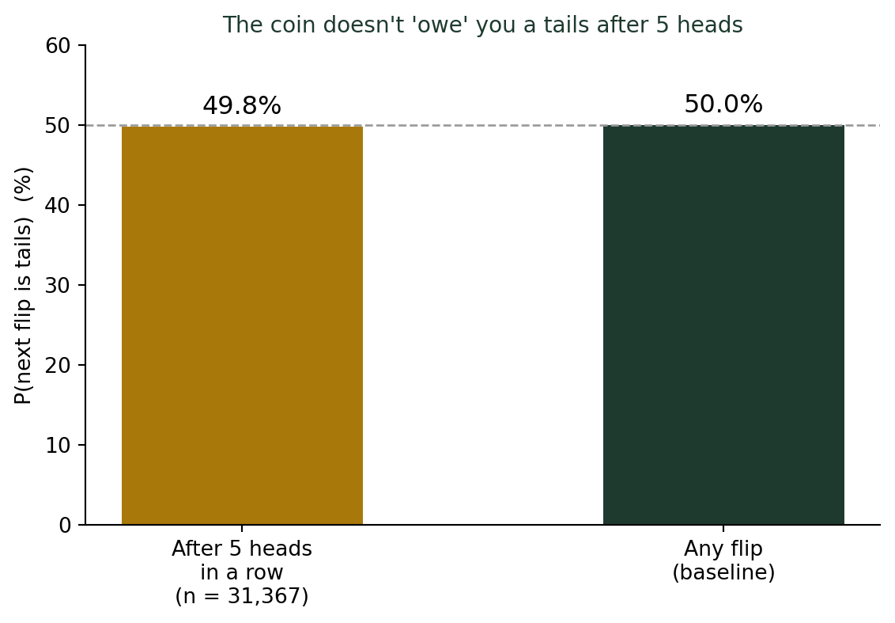
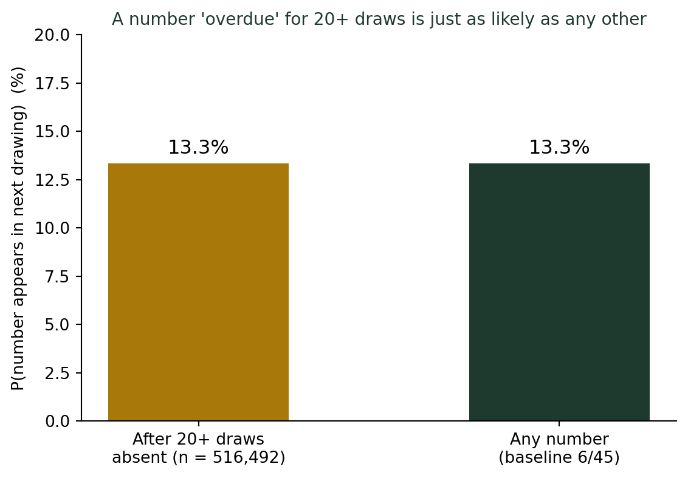

(사람의 직관은 왜 통계와 충돌하는가) 동전이 다섯 번 앞면이면 다음은 뒷면일까?
통계기초
확률
행동통계
동전이 앞면만 다섯 번 연속 나오면 다음엔 뒷면이 나올 ’차례’라는 느낌이 든다. 로또에서 오래 안 나온 번호를 일부러 고르는 사람도 같은 심리다. 200만 번의 동전 던지기와 20만 회의 로또 시뮬레이션으로, 그 ’차례’라는 감각이 왜 틀렸는지 직접 확인해본다.
오늘은 도박사의 오류가 113살이 되는 날이다
공교롭게도 이 글을 쓰는 오늘, 2026년 8월 18일은 통계학 역사에서 가장 유명한 사건이 벌어진 지 정확히 113년이 되는 날이다. 1913년 8월 18일, 모나코 몬테카를로 카지노의 룰렛 테이블에서 검은색이 26번 연속으로 나왔다. 확률은 매번 거의 정확히 반반(정확히는 초록 칸 때문에 약간 낮은 48.6%)인데도, 검은색이 열 번 넘게 이어지자 도박사들은 “이제 슬슬 빨간색이 나올 차례”라며 빨간색에 돈을 쏟아붓기 시작했다. 결과는 파산이었다. 이 사건 이후 “이번엔 반대가 나올 차례”라는 믿음에는 도박사의 오류(gambler’s fallacy), 또는 아예 몬테카를로의 오류(Monte Carlo fallacy)라는 이름이 붙었다.
한국에서 가장 흔하게 나타나는 버전은 로또다. “이 번호는 20회 넘게 안 나왔으니까, 슬슬 나올 때가 됐다”며 오랫동안 안 나온 번호를 일부러 골라 넣는 사람들이 많다. 반대로 “지난주에 나왔으니 이번 주는 안 나오겠지”라며 최근 당첨 번호를 피하기도 한다. 둘 다 같은 믿음에서 나온다. 무작위한 사건에는 “균형을 맞추려는 힘”이 작용한다는 믿음이다.
동전은 지난 결과를 기억하지 못한다
동전 던지기로 이 믿음을 직접 검증해보자. 공정한 동전(앞면 확률 정확히 50%)을 200만 번 가상으로 던지고, 앞면이 5번 연속으로 나온 바로 다음 던지기만 골라서 그 결과가 무엇이었는지 세어본다.
5번 연속 앞면이 나온 사례는 200만 번 중 약 3만 번 넘게 등장했다. 그 바로 다음 던지기에서 뒷면이 나올 확률은 49.8% — 그냥 아무 때나 던져서 뒷면이 나올 확률(50.0%)과 통계적으로 구별되지 않는다. 동전에는 “지금까지 몇 번 앞면이 나왔는지” 세는 기억장치가 없다. 매번 새로 던지는 것이고, 매번 확률은 똑같다.
로또의 “안 나온 번호”도 마찬가지다
같은 논리를 한국인에게 훨씬 친숙한 상황으로 옮겨보자. 로또 6/45는 매회 45개의 공 중 6개를 뽑는다. 특정 번호가 20회 넘게 연속으로 안 나왔다면, 정말로 다음 회차에 나올 확률이 더 높아질까? 20만 회의 로또 추첨을 가상으로 돌려서 확인해보자.

20회 넘게 안 나온 번호가 바로 다음 회차에 나올 확률은 13.3%로, 그냥 아무 번호나 뽑힐 기본 확률(6/45 = 13.3%)과 정확히 일치한다. 공 하나하나에는 “내가 얼마나 오래 안 나왔는지” 새겨진 눈금이 없다. 매주 45개 공을 다시 섞어서 뽑을 뿐이다.
핫핸드의 반대편에 있는 같은 착각
바로 어제 다룬 핫핸드 효과와 오늘의 도박사의 오류는 언뜻 정반대 주장처럼 보인다. 핫핸드는 “연속되면 계속될 것이다”, 도박사의 오류는 “연속되면 곧 끊어질 것이다”라고 믿는다. 그런데 두 착각의 뿌리는 완전히 같다. 독립적인 사건들의 나열에서도 사람은 어떤 “흐름”이나 “패턴”을 찾아내려 한다. 흐름이 이어질 거라 믿으면 핫핸드, 흐름이 끊어질 거라 믿으면 도박사의 오류가 된다. 둘 다 “다음 사건은 이전 사건들과 무관하게 독립적으로 일어난다”는 단순한 사실을 받아들이지 못해서 생긴다.
그렇다면 도박사의 오류는 완전히 틀렸는가
한 가지 짚을 균형점이 있다. 비복원추출(replacement 없이 뽑는 경우)에서는 도박사의 오류처럼 보이는 직관이 실제로 맞을 때도 있다. 예를 들어 카드 한 벌(52장)에서 스페이드가 연달아 여러 장 나왔다면, 남은 카드 중 스페이드 비율은 실제로 줄어들어 있다 — 카드는 한 장씩 빠지며 “기억”을 남기기 때문이다. 그런데 동전 던지기나 로또 추첨(매회 45개 공을 새로 채워 넣는 방식)은 이런 기억이 없는 복원추출에 해당한다. 도박사의 오류가 진짜 오류가 되는 것은 정확히 이 지점 — 기억이 없는 독립시행을, 기억이 있는 것처럼 착각할 때다.
“차례가 됐다”는 말을 들으면 확인할 것
- 이 사건은 매번 독립적으로 일어나는가? 동전, 로또, 룰렛, 주사위는 그렇다. 매번 조건이 완전히 새로 시작된다.
- 아니면 이전 결과가 다음 결과의 조건을 실제로 바꾸는가? 카드 뽑기처럼 “남은 것”이 줄어드는 상황이라면 이야기가 다르다.
- 독립시행이라면, “차례”라는 표현 자체가 성립하지 않는다. 확률은 과거를 기억하지 못하므로 누구에게도 빚진 것이 없다.
더 깊이: 확률이 “기억하지 않는다”는 것의 정의
강의노트 〈수리통계학 1. 확률론 — 독립〉은 두 사건 \(A\)와 \(B\)가 독립일 조건을 \(P(A \cap B) = P(A) \cdot P(B)\)로 정의하고, 동전을 세 번 던지는 예시로 각 시행이 서로 독립임을 보여준다. 이 정의를 오늘의 질문에 그대로 적용하면 답이 나온다. “5번 연속 앞면이 나왔다”는 사건과 “6번째가 뒷면이다”는 사건이 독립이라면, \(P(\text{6번째 뒷면} \mid \text{5연속 앞면}) = P(\text{6번째 뒷면})\)이어야 한다 — 즉 조건부확률이 무조건부확률과 같아야 한다. 오늘 시뮬레이션에서 49.8%와 50.0%가 사실상 같았던 이유가 바로 이 정의 안에 있다. 같은 강의노트는 도박사 슈발리에 드 메레의 주사위 문제도 함께 다루는데, 공교롭게도 “도박사”라는 이름이 붙은 최초의 확률론 문제 역시 바로 이 독립성을 오해하면서 시작됐다.
결론: 확률은 빚지지 않는다
몬테카를로 카지노에서 파산한 도박사들도, 로또 번호를 고르며 “이번엔 나올 차례”라고 생각하는 사람들도 모두 같은 실수를 한다. 무작위성이 공평해야 한다는 생각과, 매 시행이 독립적이라는 사실을 혼동하는 것이다. 무작위성은 결과적으로, 아주 긴 시간에 걸쳐서는 확실히 공평해진다(대수의 법칙). 그러나 그 공평함은 “지금까지 덜 나온 쪽을 봐준다”는 의도적인 보정을 통해서가 아니라, 그저 매번 같은 확률로 계속 던지다 보면 저절로 그렇게 된다는 뜻일 뿐이다. 동전에게도, 로또 공에게도, 룰렛 휠에게도 지난 기억이란 없다. 다음 번은 언제나 처음 던지는 것과 똑같다.